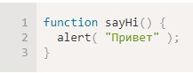
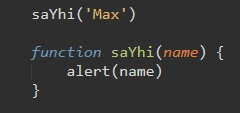
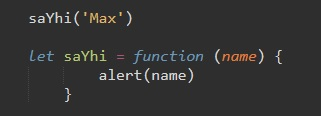
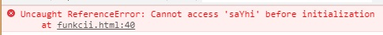
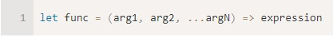
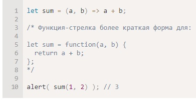
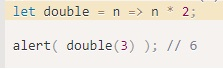
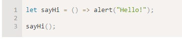
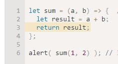

Синтаксис, который мы использовали до этого, называется Function Declaration (Объявление Функции):
Существует ещё один синтаксис создания функций, который называется Function Expression (Функциональное Выражение).
Оно выглядит вот так:
В чем ключевое отличие от эти двух способов. В первом случае (Function Declaration) мы можем использовать функцию в любом участке кода, даже перед тем как объявили функцию
В случае же с Function Expression мы можем обратиться к функции только после того как объявили функцию. К примеру вот такой код выдаст нам ошибку:
В консоли мы увидим такой лог:
Существует ещё более простой и краткий синтаксис для создания функций, который часто лучше, чем синтаксис Function Expression. Он называется «функции-стрелки» или «стрелочные функции»
…Такой код создаёт функцию func с аргументами arg1..argN и вычисляет expression с правой стороны с их использованием, возвращая результат.
Другими словами, это почти то же самое, что и:
Пример
Если у нас только один аргумент, то круглые скобки вокруг параметров можно опустить, сделав запись ещё короче:
Если нет аргументов, используются пустые круглые скобки (их указывать обязательно):
Многострочные стрелочные функции
